Enciclopédia Turística MALANJE
A História de Malanje
Malanje é uma das províncias mais históricas, misteriosas e culturalmente ricas de Angola. Localizada na região centro-norte do país, é conhecida pelas suas paisagens naturais impressionantes, rios majestosos, quedas de água, formações rochosas únicas, tradições ancestrais e pelo legado do antigo Reino de Ndongo.
Origem do Nome
Existem várias narrativas populares sobre a origem do nome Malanje.
Uma das versões mais conhecidas relata que comerciantes e exploradores portugueses encontraram um soba local chamado Malanji, e o território acabou por receber essa designação. Outra versão associa o nome às antigas comunidades Ambundu que habitavam a região.
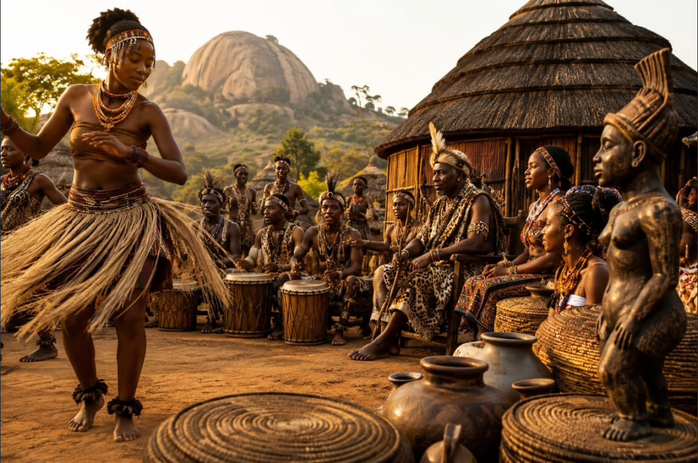
O Reino de Ndongo
Durante séculos, estas terras integraram o poderoso Reino de Ndongo.
- Estrutura política organizada
- Exército próprio
- Sistema de impostos
- Comércio regional
- Autoridades tradicionais (sobas)
Os soberanos eram respeitados não apenas como governantes, mas também como líderes espirituais.
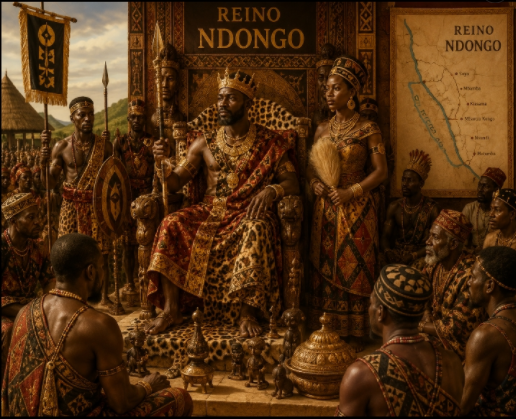
A Lendária Rainha Njinga
Entre todas as figuras históricas associadas à região, nenhuma é tão admirada quanto Nzinga Mbandi.
Conta-se que possuía inteligência extraordinária, coragem incomum e uma capacidade estratégica admirável. Quando negociava com representantes portugueses, recusava demonstrar submissão.
É o maior símbolo de resistência africana à colonização portuguesa em Angola.
Rainha do Ndongo, actual Angola, Nzinga Mbandi(1582-1663) entrou para a história como combatente destemida, exímia estrategista militar e diplomata astuciosa. Ela chefiou pessoalmente o exército até os 73 anos de idade e era tão respeitada pelos portugueses que Angola só foi dominada depois de sua morte, aos 81 anos.
Até hoje, a sua memória vive nas canções, nos relatos tradicionais e nas formações rochosas de Pungo Andongo.
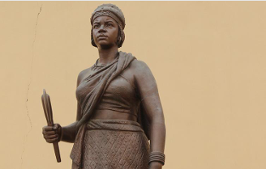
Os Sobas e a Sabedoria Ancestral
Os sobas são muito mais do que autoridades tradicionais. São guardiões da memória coletiva.
- Conhecem histórias que nunca foram escritas
- Sabem onde ocorreram batalhas antigas
- Conhecem as origens das famílias
- Recordam secas, cheias, migrações e acontecimentos transmitidos de geração em geração
Muitas comunidades ainda recorrem aos sobas para resolver conflitos e preservar tradições.
Linha do Tempo Histórica
- Séculos XV-XVI: Povos Ambundu habitam a região
- Século XVII: Resistência da Rainha Njinga contra a colonização
- Século XIX: Chegada dos exploradores portugueses
- 1975: Independência de Angola
- 2000+: Desenvolvimento do turismo na província
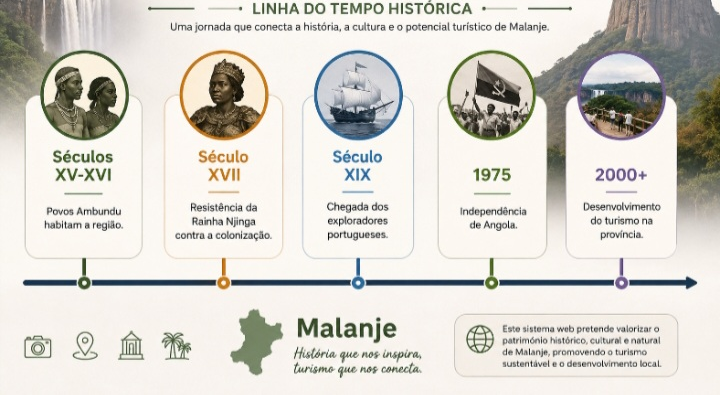
A Natureza Exuberante de Malanje
Malanje é abençoada com uma diversidade natural impressionante. Desde as majestosas quedas de água até às florestas tropicais, passando por formações rochosas únicas e uma fauna rara, a província é um verdadeiro paraíso para os amantes da natureza.

💧 Quedas de Kalandula
Uma das maiores quedas de água de África, com 105 metros de altura. O som do rugido da água pode ser ouvido a quilómetros de distância.
As Quedas de Kalandula , anteriormente chamadas de Duque de Bragança. Estão localizadas no Município de Kalandula, a 85Km da cidade de Malanje.
Caracterizam-se or serem grandes quedas de água, proveniente do rio Lucala, e são consideradas as segundas maiores de África, com una altura de 105m e uma largura de 410m.
Possui um miradouro de onde se tem uma vista espetacular das quedas com o seu arco-íris sempre presente, e uma pousada com uma vista frontal. Para os mais ousados, podem descer até a margem das quedas e aprecia-las de perto, além de se puder tomar banho nas águas frias.

⛰️ Pedras Negras de Pungo Andongo
Gigantescos blocos rochosos que se erguem do solo como fortalezas naturais. Uma das Sete Maravilhas Naturais de Angola.
As Pedras Negras de Pungo Andongo, também conhecidas por Fortaleza de ungo Andongo, são grandes formações rochosas com milhões de anos, localizadas no Município de Cacuso à 116 Km da Cidade de Malanje.
De uma beleza estonteante que encanta todo o visitante, que pode observa-las numa maravilhosa vista desde o topo das mesmas, deslumbrando o lindo rio Kwanza e toda a extensão das rochas.
Estes importantes maciços, além do grande valor natural que têm, também carregam muita história, sendo utilizadas como fortificação para os Reis Ngola e nesta altura era a Capital do Reino da Matamba. . Também serviu com refúgio da Rainha Nzinga Mbandi.

💧 Quedas de Musseleje
Situadas no Município de Kalandula à 39 km da sede do Município e a 95 Km da Cidade de Malanje, as quedas se caracterizam or serem umas cascatas escondidas no meio de densa vegetação, que termina numa pequena bacia de água, propicia para o banho
O acesso é de terra batida, com excelentes condições para a realização de diversas actividades como escalar, nadar, acampar e observação da natureza.
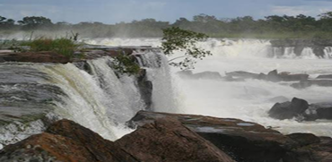
💧 Rápidos do Kwanza
Os rápidos do Kwanza são um importante recurso natural situado no Município de Cangandala, a 35Km da Cidade de Malanje e a 20Km da Sede Municipal.
Caracterizam-se por serem quedas de água caídas sobre pedregulhos.
Boas para banho, pesca desportiva e passeio de barco, além de que no seu enorme se podem realizar diversas actividades turística como campismo, actividades recreativas entre outras.
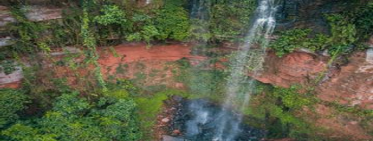
💧 Quedas dos bem casados
Situadas no Município de Cabundi Catembo as Quedas dos Bem casados se encontra á ….km da Cidade de Malanje, numa estrada completamente asfaltada.
Caracterizam-se por duas quedas de água, uma proveniente do Rio kubanje e outra do Rio Muheba, que se encontram formando uma perfeita união.
Estão no meio de uma mata densa, a descida até a base das quedas é bastante ingreme, no entanto uma vez postos na base, é um encanto natural sem igual. Propicia para o banho e a realização de outras actividades de aventura e lazer.
No entanto existe uma lenda amorosa sobre as Quedas, dizem que 2 amantes de aldeias rivais queriam oficializar o seu amor, mas devido a rivalidade entre os povos foram mortos, no lugar que cada um morreu formou-se uma nascente de água que se transformou em Quedas, uma procurou a outra e encontraram-se, abraçando-se num amor lindo e eterno.
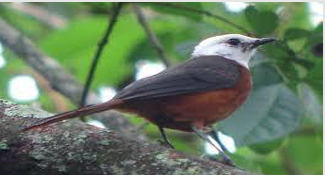
💧 Aldeia da Kinjila
Pequena Aldeia criada pelo Soba Lumbo, situada no Município de Kalandula á … km da Cidade de Malanje,actualmente liderada pelo Soba Nhanga.
Esta constituída com casas retangulares feitas de adobe com telhado de capim, rodeada de uma mata meio serrada.
Nela encontramos o Cossifa de Cabeça Branca , pássaro endêmico de Angola. Além deste, podemos encontrar outras variedades de pássaros raros, tendo como actividade principal o aviturismo.
Rios de Malanje
Rio Kwanza – O mais famoso, alimenta comunidades, facilita o comércio, sustenta a agricultura e inspira lendas e tradições.
Outros rios: Rio Lucala, Rio Cuije, Rio Lui, Rio Cangandala.
As margens dos rios foram palco de encontros entre povos, celebrações tradicionais e momentos marcantes da história angolana.
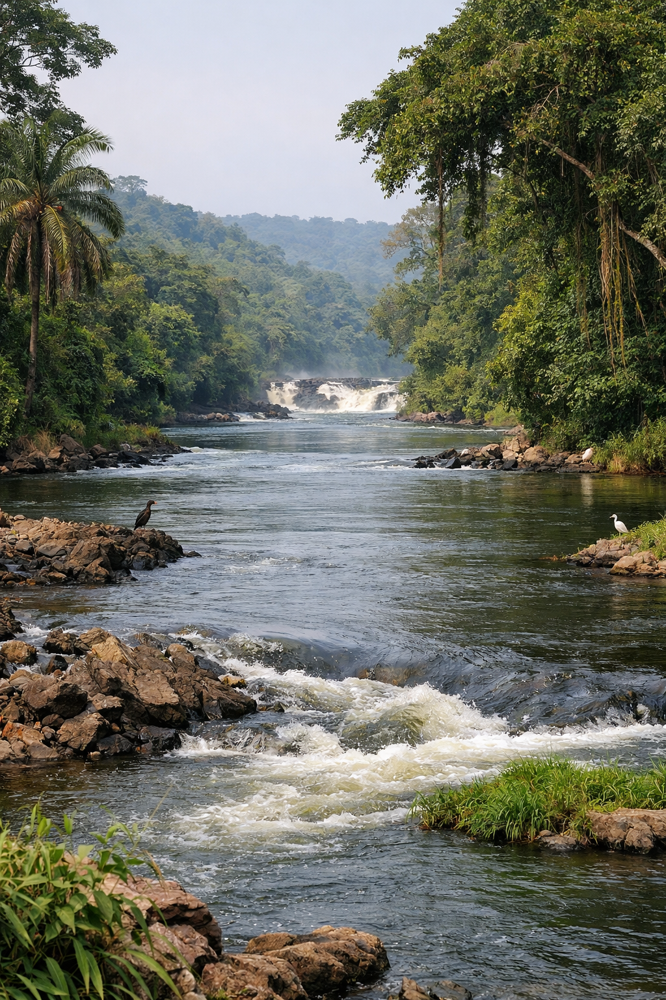
A Terra da Palanca Negra Gigante
Poucos animais despertam tanto orgulho nacional quanto a Palanca Negra Gigante.
- Elegante
- Rara
- Majestosa
Durante muitos anos acreditou-se que poderia desaparecer. Mas a sua sobrevivência transformou-se numa das maiores histórias de conservação da natureza em Angola.
Caracterizado por ser uma floresta aberta, o Parque Nacional de Cangandala situa-se no Município de mesmo nome, a 50Km da Cidade de Malanje e tem uma superfície de 600Km2
Este importante Parque foi inicialmente criado em 1963 como uma Reserva Integral, e a 25 de Junho de 1970 passou a Parque Nacional.
A principal atração é a “Palanca Negra Gigante” ungulado raro, endêmico de Angola, considerado como Símbolo Nacional, mas no seu interior também se podem observar outras espécies como bâmbis, gulungos, nunces, palancas castanhas, pacaças e seixas.

Flora
Espécies comuns na região:
- Imbondeiro (baobá)
- Mulemba
- Eucalipto
- Acácia
- Mandioca
- Milho
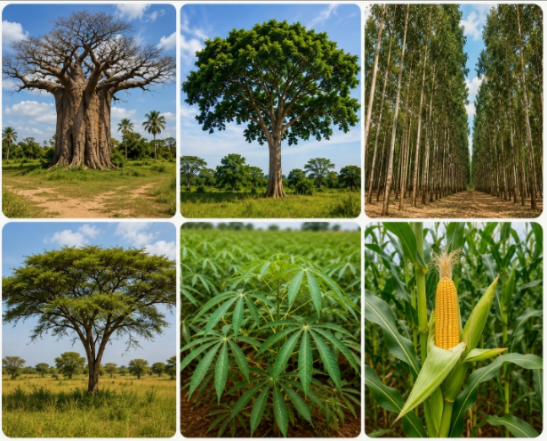
Fauna
Animais encontrados na região:
- 🐾 Palanca Negra Gigante
- 🐾 Antílopes
- 🐾 Macacos
- 🐾 Javali
- 🐾 Leopardo
- 🐦 Aves tropicais
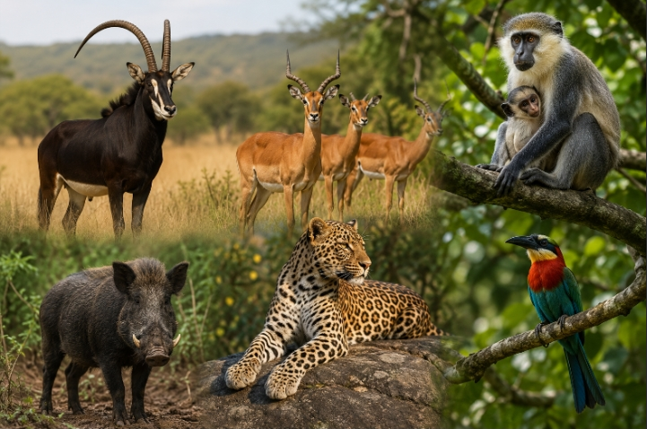
Cultura e Tradições de Malanje
A cultura de Malanje é um tesouro vivo, onde as tradições ancestrais se mantêm preservadas através das gerações. A música, a dança, o artesanato e as festividades são expressões vibrantes da identidade do povo malanjino.
Danças Tradicionais
- Semba
- Rebita
- Kabetula
- Kilapanga
As apresentações ocorrem em festas tradicionais, casamentos e celebrações comunitárias.
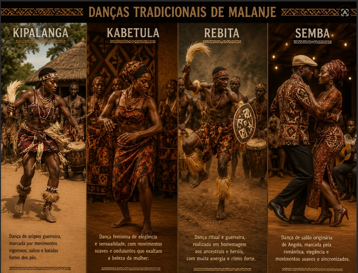
Instrumentos Musicais
- Ngoma (tambor)
- Marimba
- Kissange
- Tambores tradicionais
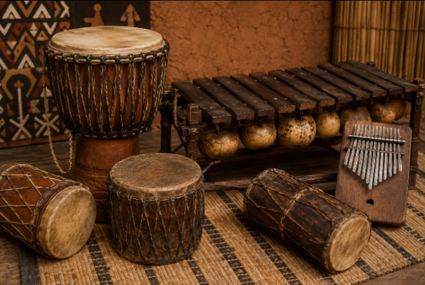
Artesanato
Produção de:
- Cestos
- Esculturas
- Máscaras
- Objetos decorativos
- Instrumentos musicais
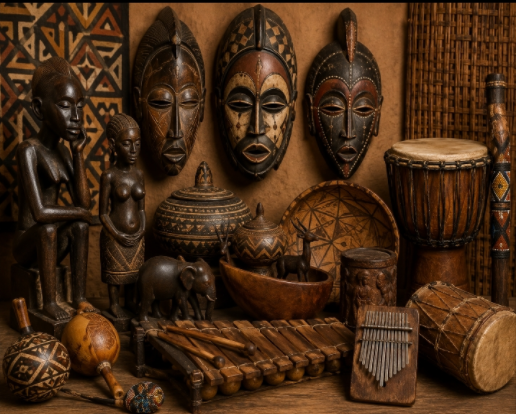
Festividades
- Carnaval – Celebração cultural com grupos tradicionais
- Festas Religiosas – Realizadas em diversos municípios
- Festivais Culturais – Valorização da música, dança e gastronomia
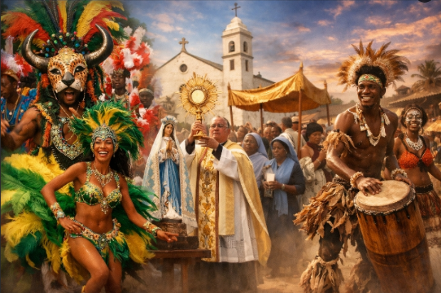
Comunidades e Tradições
As comunidades de Malanje preservam tradições que incluem:
- Rituais de passagem
- Cerimónias de colheita
- Contação de histórias pelos mais velhos
- Artesanato transmitido de geração em geração
Gastronomia Típica de Malanje
Cada prato tradicional guarda séculos de história. A culinária de Malanje é um reflexo da sua identidade cultural e da generosidade da sua terra.

🍲 Calulu
Guisado de carne ou peixe com quiabo, alface e legumes. Prato tradicional muito apreciado.

🍚 Funge
Massa de farinha de milho ou mandioca. Principal acompanhamento e símbolo de união familiar.

🍗 Muamba de Galinha
Frango estufado com óleo de palma, quiabo e gindungo. Preparada em festas e celebrações.
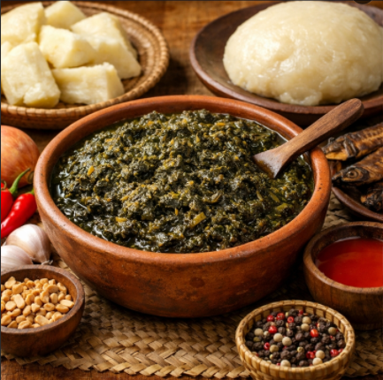
🌿 Kizaca
Folhas de mandioca preparadas de forma tradicional. Um verdadeiro símbolo da culinária angolana.
Frutas Tradicionais
- Manga
- Goiaba
- Papaia
- Abacate
- Banana
- Jaca
- Ananás
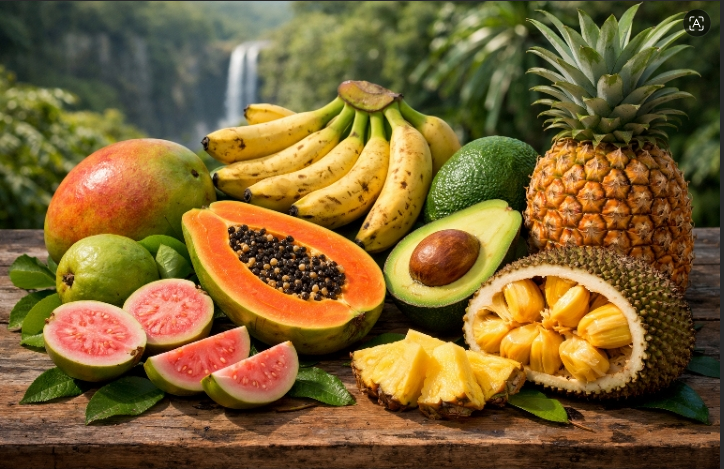
Restaurantes Recomendados
Kalandula Sabores de Malanje Pungo Andongo
Estes restaurantes oferecem uma experiência autêntica da culinária malanjina, com pratos preparados segundo receitas tradicionais.

Monumentos Naturais e Históricos
Malanje é um museu a céu aberto, onde a natureza esculpiu verdadeiras obras de arte e a história deixou marcas indeléveis.
⛰️ Pedras Negras
Uma das Sete Maravilhas Naturais de Angola. Formações rochosas imponentes com valor histórico e espiritual.
💧 Quedas de Kalandula
Uma das maiores quedas de água de África, com 105 metros de altura. Arco-íris frequentes e vegetação exuberante.

🏰 Forte de Pungo Andongo
Construção histórica do período colonial português, testemunha de séculos de história.
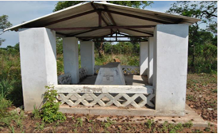
🏰 Túmulo do zé Telhado
Situada no Município de Mucari á … km da Cidade de Malanje, caracteriza se por ser uma campa branca construída numa área reservada ao ar livre.
Zé do Telhado foi um comandante aspirante português conhecido por roubar aos ricos e dar aos pobres, por isso foi também conhecido como o Robin Hood de Angola.
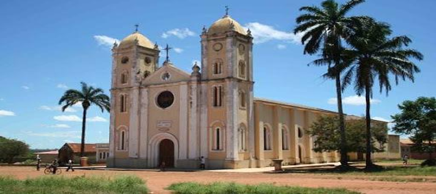
🏰 Missão Católica De São Miguel Arcanjo
A Missão Católica “Miguel Arcanjo”, é uma igreja da congregação espirita, construída em 1959 no Município de Kalandula a ….km da Cidade de Malanje.
É uma autêntica réplica da Igreja de Camabatela (Cuanza-Norte), sendo que a única diferença é o revestimento exterior. Foi fundada pelo Padre Belga Luís de Vilarge.
A história sobre a semelhança entre estas duas igrejas deveu-se a que o Padre Vilarge tendo a intenção de construir uma igreja em Calandula, foi ter com o Bispo, que o orientou a ir a Camabatela onde estavam a construir uma igreja, e lá foi ele solicitar o projecto, como não estava ainda acabada não viu o resultado final da igreja de Camabatela, por isso a diferença exterior.
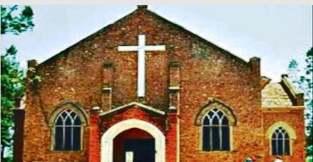
🏰 Missão Evangélica Do Quéssua
É uma igreja da Missão Metodista situada no Município de Malanje á 12 km do centro da Cidade.
A primeira igreja foi construída em 1924 e era completamente de adobe, com o tempo desabou e no lugar foi construída a actual já de alvenaria inaugurada em 1951.
Ao redor desta Missão tem importantes instituições como Universidades e hospitais, tendo formado um grande número de figuras que hoje se encontram na governação do País.
Parque Nacional da Cangandala
O menor parque nacional de Angola, famoso por proteger a Palanca Negra Gigante, animal considerado símbolo nacional.
- Santuario da Palanca Negra Gigante
- Espécie endémica de Angola
- Área de conservação de biodiversidade
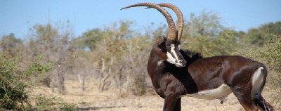
Museu Regional de Malanje
Acervo histórico e cultural da província de Malanje, com exposições que contam a história do Reino de Ndongo, da Rainha Njinga e das tradições locais.


Lagoa do Muceque
Lagoa com águas cristalinas e paisagem deslumbrante, um local de beleza tranquila e perfeito para contemplação.
Miradouros Naturais
Vários pontos de observação oferecem vistas panorâmicas impressionantes:
- Miradouro das Pedras Negras
- Miradouro das Quedas de Kalandula
- Vista do Rio Kwanza
Perfeitos para fotografias e momentos de contemplação.
Lendas que Sobrevivem ao Tempo
As lendas de Malanje são o eco de um passado onde o sagrado e o quotidiano se entrelaçavam. Transmitidas oralmente de geração em geração, elas mantêm viva a memória dos antepassados.
A Pegada da Rainha Njinga
Segundo a tradição oral, a Rainha Njinga deixou impressa numa das Pedras Negras a marca do seu pé durante uma fuga estratégica dos seus inimigos.
A Lenda da Pegada da Rainha Njinga é uma das tradições mais conhecidas da província de Malanje e está associada à célebre Rainha Njinga.
Para muitas comunidades locais, essa pegada simboliza a presença histórica da rainha na região e representa a resistência do povo angolano contra a dominação estrangeira.
Embora não existam provas históricas que confirmem que a marca foi realmente deixada por ela, a lenda faz parte do património cultural e é transmitida de geração em geração.
Actualmente, a chamada Pegada da Rainha Njinga é um ponto de interesse turístico e cultural em Malanje, atraindo visitantes interessados na história, nas tradições e nas lendas de Angola .
Ela reforça a importância da Rainha Njinga como uma das figuras mais marcantes da História angolana, reconhecida pela sua inteligência dos reinos de Ndongo e Matamba.
Verdade ou lenda, a história continua viva na imaginação popular.
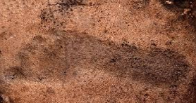
A Mulher das Águas
Em algumas aldeias existem histórias sobre uma misteriosa entidade protetora dos rios.
Dizem que protege os pescadores respeitadores da natureza e pune aqueles que poluem as águas.
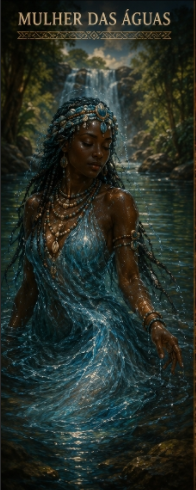
Os Espíritos das Pedras
Há quem afirme ouvir sons estranhos junto às Pedras Negras durante determinadas noites.
Os mais velhos explicam que são os espíritos dos antepassados recordando acontecimentos antigos.
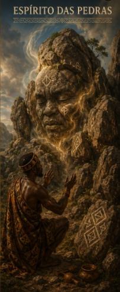
O Tambor Invisível
Algumas narrativas tradicionais contam que, em noites específicas, sons de tambores podem ser ouvidos ao longe sem que ninguém encontre os músicos.
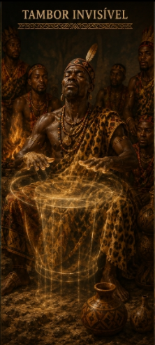
Porque Visitar Malanje?
Porque em Malanje:
- A história pode ser tocada
- As lendas continuam vivas
- A natureza impressiona
- A cultura emociona
- As tradições permanecem preservadas
- Os habitantes recebem os visitantes com hospitalidade
Municípios de Malanje
Malanje é composta por diversos municípios, cada um com as suas particularidades, tradições e belezas naturais.
🏙️ Malanje
A capital da província, centro administrativo, comercial e cultural.

💧 Calandula
Famoso pelas majestosas Quedas de Kalandula, um dos maiores atrativos turísticos de Angola.
⛰️ Pungo Andongo
Lar das icónicas Pedras Negras e do Forte histórico, com grande valor cultural e espiritual.
🌾 Cacuso
Município agrícola com forte produção de alimentos.
🌳 Marimba
Conhecido pela sua vegetação exuberante e clima ameno.
🌄 Quela
Paisagens montanhosas e tradições culturais preservadas.
🏞️ Kiwaba Nzoji
Região com belas paisagens e comunidades acolhedoras.
Perguntas Frequentes
Tudo o que precisa saber antes de visitar Malanje

Conheça os Criadores
A equipa por trás da Enciclopédia Turística de Malanje

Equipa de desenvolvimento da Enciclopédia Turística de Malanje

António Diogo

Maria Santos

Carlos Mendes

Ana Ferreira
Assistente Turístico
Olá! Como posso ajudar na sua viagem a Malanje?